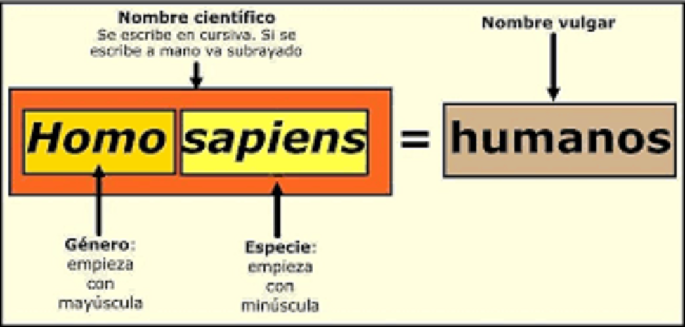
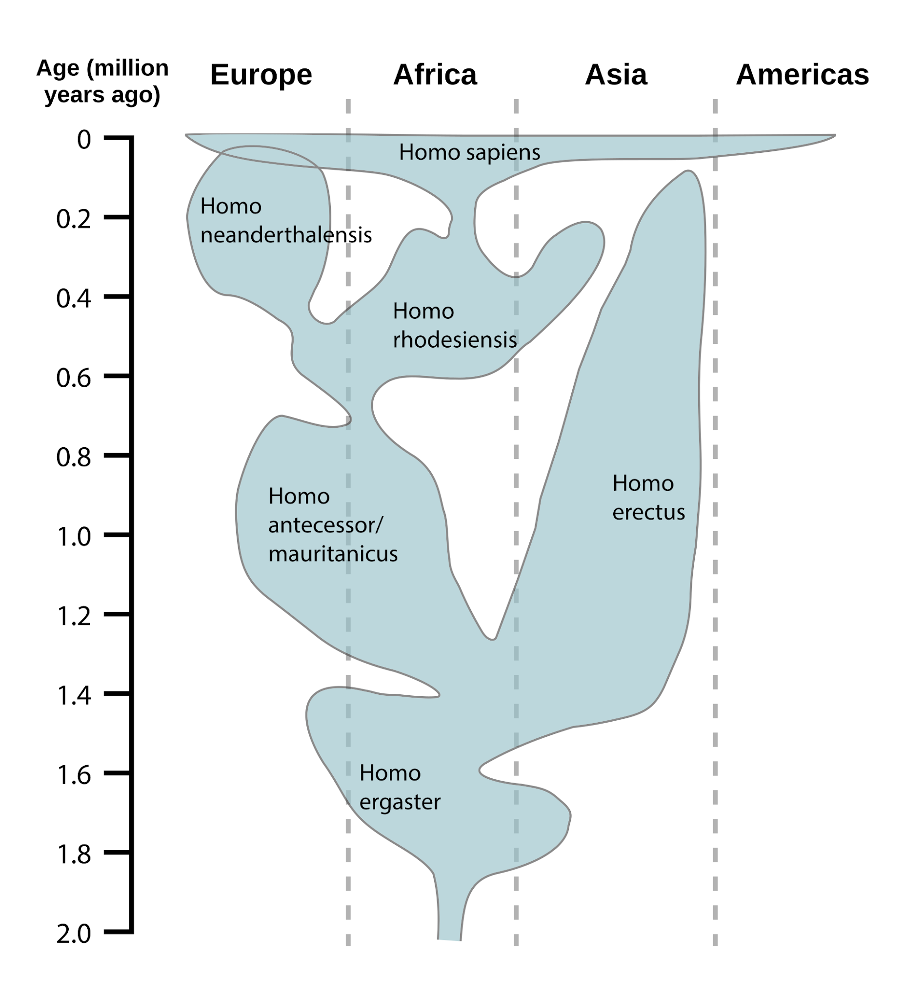
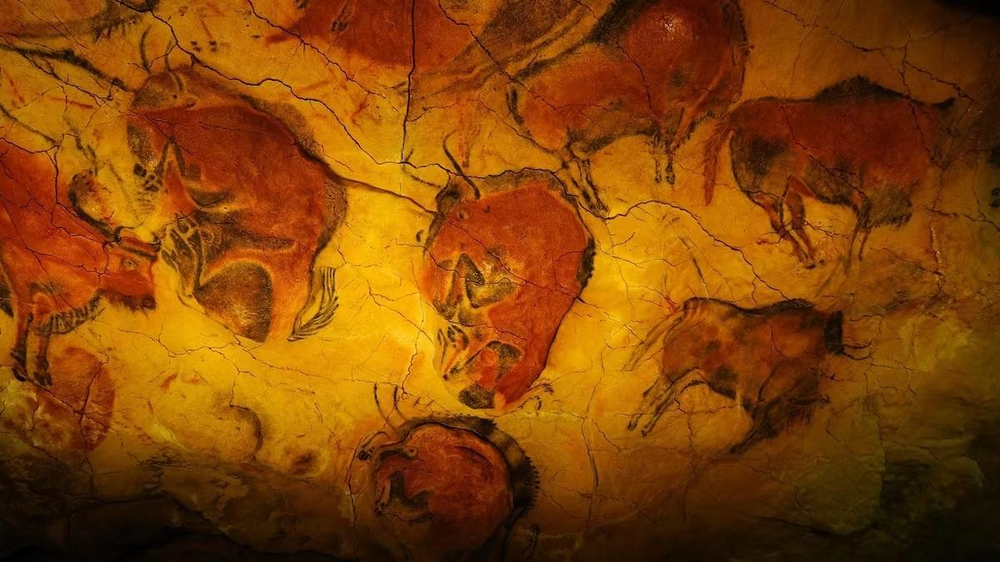
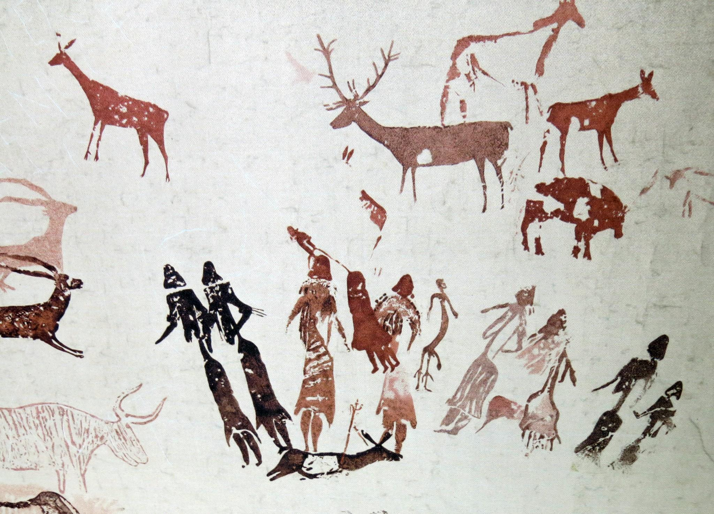
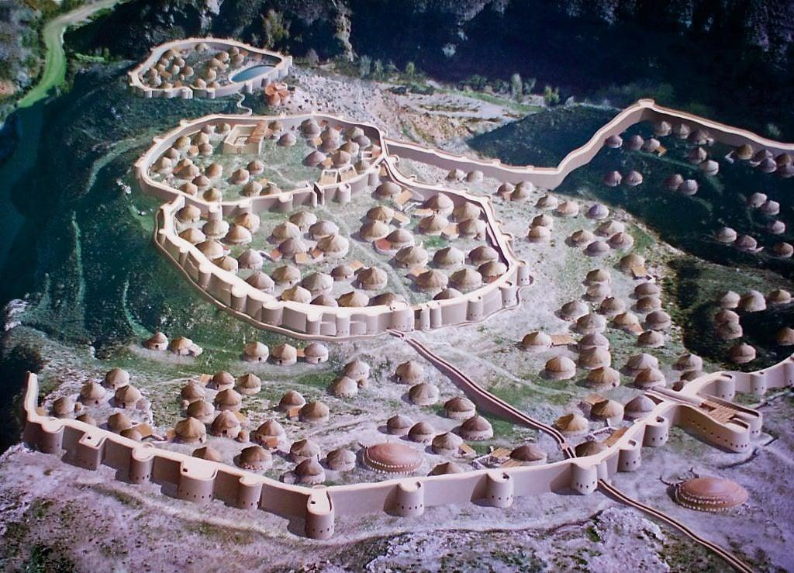
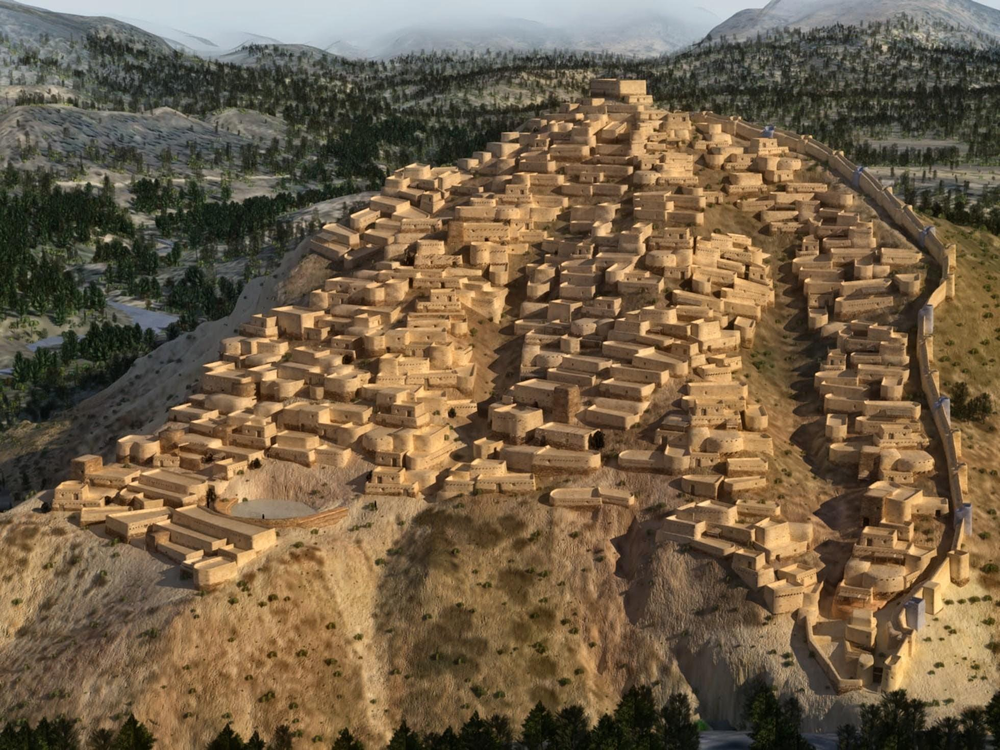
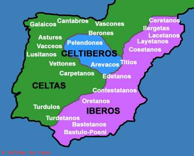
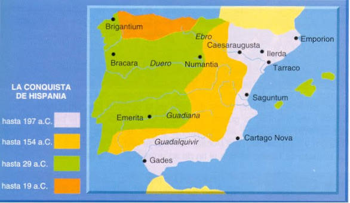
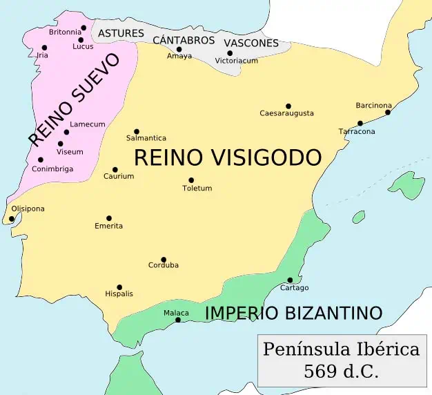
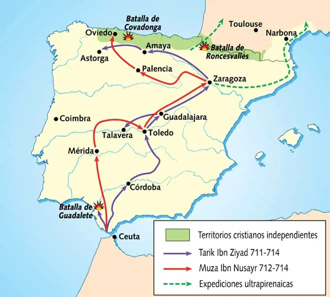

Bloque 1. La península ibérica desde los primeros humanos hasta la monarquía visigoda (711)
1.1 La prehistoria hasta la aparición de la escritura

La prehistoria es la etapa más extensa de la humanidad. Su principal característica es la ausencia de fuentes escritas, por lo que se obtiene información gracias a cráneos, dientes, herramientas, pinturas rupestres, polen o análisis de radioisótopos (encontrados en yacimientos arqueológicos) y las fechas son muy problemáticas. Aunque los primeros homínidos surgieron en África hace 4 millones de años, estos migraron por toda Eurasia. En la península ibérica[1], la presencia humana está atestiguada desde hace aproximadamente 1,4 a 1,2 millones de años. Para su estudio destacan dos grandes yacimientos: el entorno de Orce (Granada), que alberga algunos de los restos líticos (herramientas de sílex) y fósiles más antiguos y debatidos; y, sobre todo, la sierra de Atapuerca (Burgos), referente mundial donde se ha documentado una secuencia evolutiva continua que incluye especies clave como el Homo antecessor [2] de hace unos 800 000 años. 
Durante esta prolongada etapa, fueron llegando, evolucionando y desapareciendo los distintos homínidos, las condiciones de vida y la tecnología empleada por los homínidos fueron cambiando, diferenciando:
- El Paleolítico (1,2 millones de años - 10 000 a. C.). En este primer período, el ser humano desarrolló un estilo de vida nómada y una economía depredadora[3] de cazadores-recolectores. Sus actividades fundamentales fueron la recolección de frutos, el carroñeo, la caza y el uso de herramientas líticas de sílex, obsidiana, etc. Aunque es debatido, en las etapas más tardías, hace 40 000 años, comenzaron a datarse evidencias de enterramientos, las primeras pinturas rupestres y, por tanto, pensamiento complejo y abstracción (Homo sapiens). Las pinturas halladas solo[4] representan animales policromados[5] (varios colores), con un carácter realista y posiblemente con fines rituales (para propiciar la caza), mitológicos o didácticos (enseñar cómo cazar). De este tipo de pinturas quedan muestras muy importantes en el norte peninsular, como las descubiertas en las cuevas de Altamira (Cantabria), y también en el sur, como en la cueva de la Pileta (Málaga).

- El Mesolítico (10 000 - 5 000 a. C.). Es una etapa de transición marcada por el fin de la última glaciación (la de los últimos mamuts) y un clima más cálido. Las sociedades mantuvieron una economía depredadora, pero adaptada al nuevo entorno (menos caza de fauna y más recolección). El cambio climático permitió el abandono del interior oscuro de las cuevas, lo que propició el desarrollo del arte rupestre levantino[6] en abrigos rocosos al aire libre, caracterizado por su esquematismo, estilo monocromático[7] y la aparición de figuras humanas en escenas complejas. Los abrigos rocosos más famosos son El Cogul (Lérida) y Valltorta (Castellón).

- El Neolítico (5 000 - 3 000 a. C.). Este período supuso una revolución y un radical cambio en la vida del ser humano, desarrollando el sedentarismo, la domesticación de animales y una economía productora[8] en agricultura y ganadería. Surgieron las primeras viviendas, se produjo la especialización y división del trabajo (expertos artesanos), las primeras diferenciaciones sociales[9] y el comercio mediante el trueque (intercambio de recursos sin moneda). Al Neolítico le corresponden también los primeros restos de cerámica (recipientes o vasos con los que guardar líquidos como aceite), decoradas en estilo cardial (hecha con marcas de bivalvos) y los monumentos megalíticos con enterramientos funerarios. La mejor muestra la tenemos en Andalucía con los dólmenes de Antequera. Las pinturas rupestres continúan la tendencia levantina (a diferencia de las pinturas cántabras, que eran del Paleolítico), con figuras humanas, monocromáticas y muy esquemáticas, donde aparecen desarrollando actividades de caza o recolección.

- La Edad de los Metales[10] (3 000 - 900 a. C.). Próxima ya a la etapa propiamente histórica, el ser humano logró fundir los metales en el horno (cobre, bronce e hierro, en ese orden de descubrimiento[11]) y estos permitieron la fabricación de utensilios, herramientas y ajuares más complejos, duraderos y valiosos para el trueque. En la Edad del Cobre destaca el yacimiento de Los Millares (Almería), donde se documentan mejoras en los sistemas de riego, abono y arado. Los poblados tienen viviendas circulares, grandes murallas y sus necrópolis cuentan con tholos (tumbas colectivas de carácter megalítico). En la Edad del Bronce destaca El Argar (Almería), cuyo poblado cuenta con una marcada estratificación social[12], con viviendas rectangulares, calles definidas y un importante sistema defensivo de torres y murallas. Los enterramientos se realizaban en el interior de las habitaciones, depositando los restos en un pithos (tinaja). Durante este período destaca la cerámica de la cultura del vaso campaniforme.

1.2 Edad Antigua, desde la escritura hasta el siglo V d. C.
Al surgir las primeras evidencias de escritura, podemos hablar de historia propiamente. La Edad del Hierro coincide con la Edad Antigua y fueron varios los pueblos que estuvieron establecidos en la península ibérica[13]. Además, llegaron a coexistir, con los nativos, diferentes pueblos colonizadores. Los tres más importantes fueron los fenicios, griegos y cartagineses.
- Los fenicios se asentaron por la costa suratlántica (sobre todo en Cádiz) y mediterránea (Málaga, Granada, etc.) a partir del siglo IX a. C. Desarrollaron importantes redes de comercio, extrayendo metales (plata, oro, cobre, estaño) e intercambiándolos por sus manufacturas de lujo (telas, vidrios, joyas) y cerámicas. Fueron quienes trajeron la escritura, el alfabeto[14], el olivo, el torno alfarero (revolucionando la cerámica) y la salazón del pescado (que daría al famoso “garum”[15] romano).
- Los griegos se establecieron también por la zona mediterránea, especialmente en la costa levantina (Ampurias, en Gerona), con los primeros contactos en torno al siglo VIII a. C., por lo que compitieron con los fenicios desde el punto de vista comercial. Sus aportaciones más destacadas fueron la moneda y la influencia en el arte y la filosofía.
- Los cartagineses fueron ocupando a partir del siglo VII a. C. los emplazamientos fenicios (al sur), compitiendo primero con griegos y, más tarde, con romanos por el control comercial del sur y sudeste peninsular. Acabaron enfrentándose con Roma entre el 264 y el 146 a. C. por el control del Mediterráneo occidental en las conocidas como guerras púnicas. Las consecuencias para la península se tradujeron en la progresiva conquista romana, llamando Hispania al nuevo territorio (adaptando el término fenicio “i-spn-ya”, que según la teoría más aceptada significa “tierra de conejos”).
Estos pueblos colonizadores eran coetáneos de otros autóctonos, como tartésicos, íberos, celtas y celtíberos.
- La civilización tartésica ha estado caracterizada por una importante mitificación (un supuesto rey Argantonio de más de 100 años, un reino plenamente desarrollado, etc.), distorsionando lo que realmente era: una sociedad agrícola, ganadera que comerciaba con los fenicios. Estuvo situada en torno al valle del Guadalquivir y el sur de Extremadura y practicaba la minería y la pesca, aprovechando el curso de los ríos y las aguas marinas. Era una sociedad que ya presentaba diferenciaciones sociales (desigualdad y una minoría privilegiada) y el yacimiento más famoso es el tesoro de El Carambolo (Sevilla). La decadencia y desaparición de esta civilización se produjo alrededor del siglo VI a. C y, en definitiva, Tartessos debe entenderse como el resultado de la asimilación de la cultura oriental fenicia por parte de los nativos peninsulares.
- Se denomina íberos (siglos VI - I a. C.) a un conjunto de ciudades-Estado con características culturales comunes: lengua no indoeuropea, moneda, ritual funerario de incineración, manifestaciones artísticas con las damas íberas: la Dama de Elche o Dama de Baza. Existía una élite gobernante (aristocracia) guerrera y esta cultura se localizaba en la zona levantina, desde Cataluña a Cádiz. Desarrollaron actividades económicas diversas como la agricultura (tríada mediterránea: trigo, vid y olivo), la ganadería o el comercio. Es el resultado de la influencia colonizadora entre fenicios y griegos.

- Los pueblos celtas (siglos VI - I a. C.) tuvieron como principal asentamiento la mitad noroeste peninsular, especialmente en Galicia y Asturias. Sus asentamientos se denominan castros y están caracterizados por ser lugares bien protegidos y en altura. Su actividad fundamental era la ganadería y practicaban una economía de subsistencia, con un comercio muy precario, basado en el trueque (no conocían la moneda ni la escritura). Su organización social era de menor desarrollo urbano y se caracterizaba por tribus que tenían un fuerte componente guerrero. Culturalmente, sí hablan una lengua de origen indoeuropeo y entre las manifestaciones artísticas se caracterizan los verracos de piedra (estatuas zoomorfas de piedra). Los asentamientos más importantes son el castro de Santa Tecla (Pontevedra) y el castro de Viladonga (Lugo).
- Los pueblos celtíberos (siglos VI - I a. C.) mezclan elementos de ambas culturas y se sitúan en el sistema Ibérico (cuencas de los ríos Duero, Tajo y Ebro), por lo que sí conocían la moneda y escritura gracias al contacto con los íberos (adaptaron el alfabeto íbero para escribir su propia lengua celta (indoeuropea). Se caracterizan por ser una sociedad guerrera y economía agropecuaria y deben ser entendidos, en definitiva, como una cultura de síntesis o bisagra. Uno de sus principales hechos históricos fue la resistencia de Numancia[16] frente a Roma.
Todo este complejo mosaico cultural (fenicios, griegos, cartagineses, Tartessos, íberos, celtas, íberos) fue desapareciendo por un nuevo actor militar: Roma. Su expansión llegó a la península desde el mar, llegando a Ampurias (antigua colonia griega[17] en Gerona) y se establecieron para el resto de la Edad Antigua gracias a un progresivo proceso de conquista[18], de unos 200 años (218 - 19 a. C.) a través de las tres guerras púnicas, contra los cartagineses. Por otra parte, los principales choques y enfrentamientos hacia nativos se produjeron contra los lusitanos (actual Portugal), celtíberos en Numancia (Soria), cántabros y astures en el norte.

A pesar de estos violentos contactos con Roma[19], la clave del dominio imperial fue la romanización: el proceso de asimilación cultural, económica y político-administrativa de las sociedades prerromanas peninsulares a la civilización romana. Este desarrollo cultural se produjo gracias a varios mecanismos vehiculares:
- La difusión del latín, que unificó lingüísticamente el territorio desplazando a las lenguas indígenas (con la única excepción del euskera/vasco, cuyo origen es desconocido[20]).
- La implantación del derecho romano como sistema jurídico.
- La construcción y el desarrollo urbano con el trazado ortogonal (cuadrículas) en las ciudades, sistemas de alcantarillado y calzadas. Destaca la Vía Augusta, de unos 1 500 km[21].
- El comercio basado en esclavos y el uso de la moneda, aumentando los lazos culturales entre romanos y la población peninsular.
- La cohesión religiosa (primero a través del culto imperial y el panteón romano, y más tarde, con el cristianismo).
- Promoción de cultivos con la tríada mediterránea (cereal, vid, olivo).
Finalmente, Hispania quedó plenamente integrada aportando grandes figuras al Imperio romano, como los emperadores Trajano y Adriano, el filósofo Séneca, el poeta Lucano o el geógrafo Pomponio Mela. La presencia romana en la península ibérica abarcó casi 700 años (218 a. C. - 476 d. C.), aunque la conquista militar del territorio fue un proceso lento y complejo que les llevó 200 años completar (218 - 19 a. C.).
Sin embargo, la desaparición del Imperio romano se debe entende por unas profundas guerras civiles, crisis en las cosechas y el comercio, la división del Imperio romano en Occidente y Oriente y las incursiones germánicas que penetraban y saqueaban los territorios del Imperio (y, por lo tanto, también en Hispania). El año 476 d. C. es considerado el fin del Imperio romano de Occidente (aunque perduraría la otra parte: el Imperio romano de Oriente) y marca el comienzo de la Edad Media (476-1492).
1.3 Inicio de la Edad Media, desde el siglo V hasta la caída visigoda (711)
A principios del siglo V, empezaron a asentarse en la península los suevos, vándalos y alanos, pero sería un nuevo pueblo germánico, los visigodos, quienes acabarían imponiéndose a estos tres primeros. Se establecieron definitivamente en Hispania en el siglo VI, ubicando su capital en Toledo. Las formas políticas, sociales y económicas de este pueblo generaron una mezcla con la base romana previa, dando lugar a la cultura hispanovisigoda.
Durante este periodo, se produjo una profunda ruralización de la economía y disminución del comercio (pérdida de población urbana en favor del campo). Aunque eran una minoría respecto a la población hispanorromana, los visigodos lograron ser una élite dominante mediante un proceso de unificación en tres frentes: territorial (conquistas del rey Leovigildo), religiosa (unificación al catolicismo por Recaredo) y legislativa (con la promulgación del código único “Liber Iudiciorum” por Recesvinto). Sin embargo, era un Estado especialmente débil (reyes efímeros electos entre nobles) que sufrió numerosas guerras civiles y una ruralización que entorpecía cualquier intento de crear una sólida administración. 
El fin del reino visigodo, debilitado por sus luchas internas, se produjo en el año 711, cuando los musulmanes cruzaron el estrecho de Gibraltar y derrocaron al último rey, Rodrigo, en la batalla de Guadalete. La derrota del reino visigodo dio paso a un nuevo actor que duraría casi 800 años en la península: al-Ándalus.

10-12 líneas cada una. Total aproximado entre las dos, 20-24 líneas.
Ejemplos de preguntas cortas del bloque 1
La península ibérica desde los primeros homínidos hasta la caída de la monarquía visigoda (711)
1. Defina el concepto de Paleolítico y explique las características fundamentales de la prehistoria en la península ibérica durante este período.
(Debe incluir: cronología, economía depredadora, nomadismo, herramientas líticas, arte rupestre, enterramientos).
2. ¿Qué cueva cántabra es considerada una de las cumbres del arte paleolítico? Explique las diferencias entre el arte rupestre cantábrico y el arte rupestre levantino.
(Debe incluir: Altamira; estilo cantábrico: Paleolítico, interior de cuevas, policromado, realismo, animales; estilo levantino: Mesolítico y Neolítico, abrigos rocosos, monocromo, esquematismo, figuras humanas.
3. Defina el concepto de Neolítico y explique las diferencias entre la economía depredadora y la economía productora.
(Debe incluir: domesticación, agricultura, sedentarismo, división del trabajo, trueque, cerámica, megalitismo).
4. Explique brevemente las diferencias entre la economía y la organización social del Paleolítico y el Neolítico.
(Debe incluir: caza y recolección vs. agricultura y ganadería; nomadismo vs. sedentarismo; sociedad igualitaria vs. incipiente jerarquización social).
5. ¿En qué época se desarrolló el megalitismo? Explique en qué consistió la Edad de los Metales en la península ibérica y mencione algunos yacimientos representativos.
(Debe incluir: Neolítico, Edad del Cobre, Edad del Bronce, Edad del Hierro; Los Millares, El Argar).
6. ¿A qué cultura pertenece la Dama de Baza? Explique las características generales de los pueblos autóctonos prerromanos de la península ibérica.
(Debe incluir: íberos, celtas, celtíberos, tartésicos; organización social, economía, arte, lengua).
7. ¿Qué cultura prerromana se desarrolló en el valle del Guadalquivir? Describa brevemente las causas y el impacto de las colonizaciones fenicia y griega en la península ibérica.
(Debe incluir: tartésica; comercio, escritura, olivo, moneda, arte, influencias culturales, avances tecnológicos).
8. Explique qué pueblos colonizaron la península ibérica antes de la llegada de Roma y sus características principales.
(Debe incluir: fenicios, griegos, cartagineses; asentamientos, actividades económicas, aportaciones culturales).
9. ¿Quiénes se enfrentaron en las guerras púnicas? Explique qué fue este conflicto y su importancia en la Edad Antigua de la península ibérica.
(Debe incluir: Roma vs. Cartago; 264-146 a.C.; causas, desarrollo, consecuencias para la península).
10. Explique en cuántas etapas se produjo la conquista romana de la península ibérica y qué territorios se ocuparon en cada una de ellas.
(Debe incluir: 218-19 a.C.; etapas: este y sur, centro, norte; resistencia de lusitanos, celtíberos, cántabros y astures).
11. Defina el concepto de romanización y describa los instrumentos para llevarla a cabo.
(Debe incluir: latín, derecho, religión, cristianismo, vías, ciudades, obras públicas, provincias).
12. ¿Qué dos grandes áreas culturales se dividían la península ibérica antes de la conquista romana? Explique las principales diferencias en el grado de desarrollo sociopolítico y económico entre ambas zonas.
(Debe incluir: área ibérica vs. área celta; urbanización, escritura, moneda, economía agraria vs. ganadera).
13. ¿Qué nombre dieron los romanos a la península ibérica? Describa las características fundamentales de la economía de la Hispania romana.
(Debe incluir: Hispania; economía esclavista y colonial; tríada mediterránea; minería (oro, plata, cobre); exportación de salazones/”garum”, aceite; moneda).
14. ¿Qué monarquía germánica se estableció en la península ibérica en el siglo VI? Explique brevemente cómo se instauró este reino y cuál fue su final.
(Debe incluir: Visigodos; Toledo; debilidad por monarquía electiva; entrada de musulmanes en 711 y batalla de Guadalete).
15. ¿A qué monarquía perteneció el rey Leovigildo? Explique las características del proceso de unificación territorial, religioso y legislativo de este reino.
(Debe incluir: monarquía visigoda; Leovigildo: unificación territorial; Recaredo: III, catolicismo; Recesvinto: Liber Iudiciorum; mezcla cultural con hispanorromanos y ruralización).
Notas y referencias
[1] Error común: en la prehistoria NO EXISTÍA ESPAÑA (surge mucho más adelante, con los Borbones), hay que hablar en estos primeros bloques de península ibérica todo lo posible.
[2] Curaos en salud. Si en biología se subraya el género y especie al escribir un examen, nosotros también (Homo antecessor), con la primera mayúscula (género) y la segunda minúscula (especie).
[3] No depredador en el sentido de presa-caza, sino de no reponer recursos (no replantaban, no volvían a sembrar, etc.)
[4] Curaos en salud. Aunque la RAE admita la tilde en “solo”, es en casos excepcionales. No le pongáis tilde.
[5] Poli=muchos; cromo=colores. “Muchos colores”.
[6] Posible pregunta: diferencia pintura cántabra de pintura levantina (cuevas-policromía-naturalismo-escenas simples de animales, Altamira; al aire libre, monocromía, esquemática, escenas complejas con humanos y animales, El Cogul y Valltorta.
[7] Mono=uno; cromo=colores. “Un color”.
[8] No productora en el sentido de producir, sino de que repone recursos (sí replantaban, sí volvían a sembrar, etc.)
[9] Es la primera vez que surge la noción de ricos-pobres: antes, en el Paleolítico, todos nacían en condiciones similares. El Neolítico cambia porque por primera vez las familias dejan en herencia sus recursos (trigo, frutas, animales…) y comienzan las desigualdades sociales (ricos-pobres).
[10] Si tenéis duda con las mayúsculas, no olvidéis la RAE, https://www.rae.es/diccionario-estudiante/edad
[11] Esto tiene su explicación física: el cobre funde a 1085 °C, el bronce es más complejo al ser una aleación (90 % cobre, 10 % estaño), el hierro funde a 1538 °C. Cuanta más complejidad y temperatura, más avanzado tecnológicamente debía ser el horno.
[12] Estratificación es separación, es decir, cuanto más se avanza en el tiempo, mayores diferencias sociales y desigualdades se aprecian.
[13] Recuerdo error común: en la prehistoria NO EXISTÍA ESPAÑA. Hay que hablar en estos primeros bloques de península ibérica todo lo posible.
[14] El alfabeto fenicio fue clave porque evolucionó para el latín, que posteriormente derivó al español.
[15] Es extranjerismo (palabra de otro idioma), por lo que debe “entrecomillarse” (tanto palabras en latín como inglés, francés, etc.)
[16] Curiosidad. Es uno de los hechos más populares en la historia de España (a la altura de Pelayo, la llegada a América, el Imperio español…). El propio Cervantes (escritor del Quijote) dedicó una obra de teatro al asedio de Numancia, entendido como “heroico” porque logró contener durante 20 años a las poderosísimas tropas romanas (hasta un asedio final que se prolongó casi un año). Otro dato curioso es que un barco fragata de la actual Armada española lleva el nombre de Numancia.
[17] Una colonia es un territorio lejano dominado por una población exterior, generalmente para explotar sus recursos. Por ejemplo, Grecia y Cartago tuvieron colonias en la península; América fue controlada a través de estructuras coloniales llamadas virreinatos; España tuvo colonias africanas, como Guinea Ecuatorial o el Sáhara Occidental, que se independizaron.
[18] Progresivo = progreso en un sentido de lentitud, poco a poco, con cambios lentos que duran años y no son instantáneos.
[19] Todas las conquistas de la humanidad son violentas y sangrientas: Roma, la musulmana del 711, el proceso de conquista cristiana contra al-Ándalus, la conquista de América…
[20] Curiosidad. Es tan desconocido el origen del euskera o vasco que actualmente se sigue debatiendo cómo fue posible que se conservara un idioma cuyo origen no es íbero, celta ni celtíbero. Una posible teoría apunta al complicado terreno escarpado y montañoso, que permitió a las comunidades aisladas mantener un idioma de más de 2 000 años. Ha estado a punto de extinguirse y, actualmente, apenas es hablado por la mitad de la población del País Vasco, aunque gracias a la enseñanza pública se está revirtiendo esa situación y el vasco logra sobrevivir como idioma.
[21] Curiosidad. El sistema de calzadas era tan sólido y eficaz arquitectónicamente que numerosas autovías y carreteras en España están basadas en el antiguo trazado romano. La Vía Augusta perdura con el trazado de la A-7 mediterránea (Barcelona-Cádiz) y la A-66 recorre casi al milímetro la Vía de la Plata, conectando el norte y sur peninsular (Asturias-Sevilla).